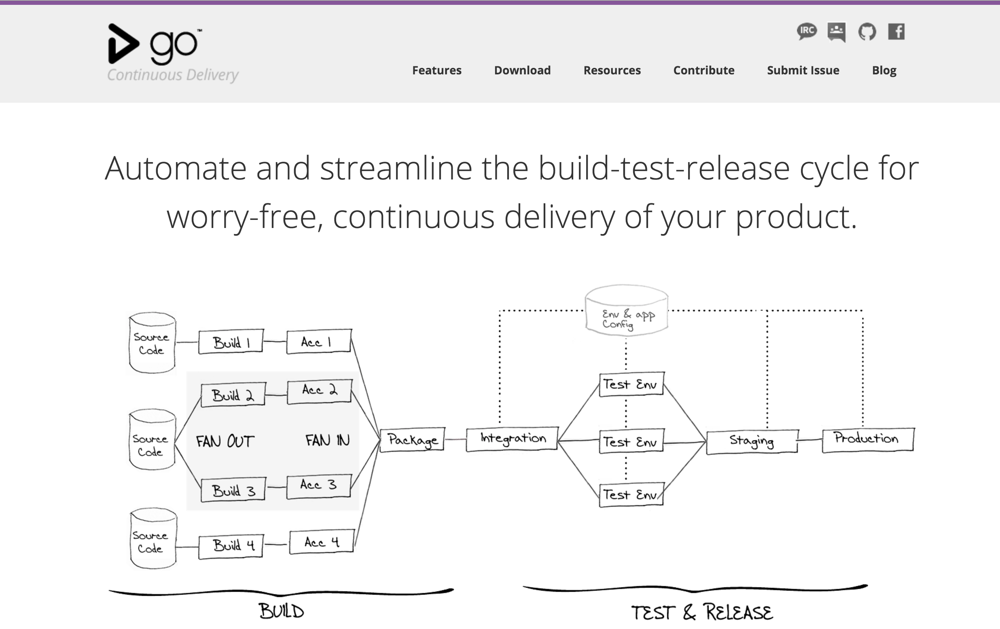

The GoCD team has created a VirtualBox VM image to help people interested in development go get started quickly. This short video shows the process of downloading and setting up the virtual machine.
Every couple of weeks ThoughtWorks hosts learning sessions for people who want more information about continuous delivery with Go. This is a recording of the session from 6 March, 2014
In a few steps you'll see an example of a simple one stage pipeline in GoCD. This is definitely not meant to be a definitive guide, just a basic introduction to how GoCD works
This article talks about the importance of CD vs CI, functional silos vs the DevOps movement and provides practical advice about automation practices and Continuous Delivery
This is the post that declared ThoughtWorks' decision to convert GoCD to an open-source project. This is where it all (re)started. This article also talks about the reasons for the decision
Scott Turnquest writes about how the Mingle team uses GoCD's Value Stream Map to figure out the answers to many questions, including which features are deployed to their many environments